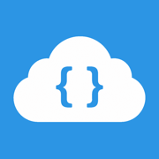

RemoteCode
Send coding tasks from your iPhone or Apple Watch to Cursor on your Mac. Your data stays in your own iCloud — no third-party servers.
Contact support
Questions, bug reports, or account help? Email us and we will get back to you.
doniy.andrei@gmail.comFrequently asked questions
-
How do I sign in or connect?
Open Settings in RemoteCode and tap Connect iCloud. On iPhone, the app uses the Apple ID already signed in on your device. Make sure iCloud Drive is enabled in Settings > [your name] > iCloud.
-
Why don’t I see any machines or projects?
Install the RemotePromptCode plugin in Cursor on your Mac, connect the same iCloud account, and open a workspace. RemoteCode creates project folders under
RemoteCode/<machine_name>/in iCloud Drive. -
How do I send a task to my IDE?
From the home screen, open a machine, choose a project, then type or dictate your task. Cursor picks it up from your shared iCloud folder and runs it on your computer.
-
Voice recording or speech recognition isn’t working
Allow Microphone and Speech Recognition when RemoteCode asks. You can change permissions anytime in iPhone Settings > RemoteCode.
-
How do I switch iCloud accounts?
In RemoteCode Settings, tap Log out, then connect again. Only one cloud provider can be active at a time.
-
iCloud sync looks stuck
Confirm you are signed into iCloud, iCloud Drive is on, and you have network access. Use the banner’s Check again button, or open iCloud settings from the app.
Privacy
RemoteCode does not run its own backend for your tasks. Coding prompts and project files sync through your personal iCloud account.